Üheks oluliseks näiteks on „Rahwa raamatukogu” (1879–1881), mis keskendus seiklusjuttudele ja pakkus lugejatele põnevust ning uusi maailmu. Selles sarjas ilmus ka esimene eestikeelne tõlge James Fenimore Cooperi „Nahksuka juttudest”, mis avas ukse Ameerika kirjandusele ja seiklusžanrile.
Ülevaade olulisematest raamatusarjadest, mis on läbi aegade süstematiseerinud ja suunanud Eesti lugeja maitset.
Kirjandusteoste avaldamine sarjadena on läbi erinevate aegade täitnud sarnaseid eesmärke. Majanduslikult ja turunduslikult on ühtse kujunduse ja formaadiga raamatute tootmine odavam ning eduka avalöögi korral tekitab sari lugejates ka kogumissoovi. Ideelises plaanis võimaldab kirjanduse sarjana välja andmine suunata publiku lugemiskogemust mingi valitud teema või žanri lõikes. Selle missiooni täitmine on tihti olnud seotud haridusliku ja kultuuripoliitilise sooviga luua ja kujundada kultuurikaanonit. Lugejate jaoks pakkusid tõlkekirjanduse sarjad enne internetiga kaasnenud infoplahvatust süsteemset ja usaldatavat teed, mille kaudu jõuda maailmaklassika paremikuni, uute kirjandusvoolude või erinevate kultuuride kirjandusteni.
Varased raamatusarjad
Esimeseks ilukirjanduslikuks raamatusarjaks võib pidada Riia misjonikeskuse välja antud nummerdatud tõlkeraamatuid lastele (1857–1887). Nende sisuks olid vaimulikud lood usuleidmisest ja misjonitegevusest. Piltidevaesel ajal eristus see sari teistest trükistest just oma esi- ja tagakaaneillustratsioonidega, mis muutsid väikesed vihikud visuaalselt ligitõmbavaks.
Sajandi viimases kolmandikus hakkasid ilmuma uued sarjad, mis pakkusid lugejale juba rohkem seiklusi ja ilukirjanduslikku mitmekesisust.

August Wilhelm Grub, „Ajalugu elulugudes”, sarjas „Rahwa raamatukogu” (1879–1881). Allikas: DIGAR

Matthias Johann Eisen, „Tähtsad mehed”, sarjas „Eesti rahwa Biblioteek” (alates 1880). Allikas: DIGAR
Teiseks tähtsaks sarjaks kujunes „Eesti Rahwa-Biblioteek” (alates 1880), mis koondas nii tõlkekirjandust kui ka algupäraseid tekste. Sari alustas Matthias Johann Eiseni tõlgitud teosega „Raudse näukattega mees” ning kujunes oluliseks kanaliks, mille kaudu maailmakirjandus jõudis eesti lugejani.
Eesti Vabariik

„Päivila Synnöve”, 1926, Päivila Synnöve, Tõlkija: August Herms. Allikas: DIGAR
Ajaviitekirjanduse levikut toetas kirjastus Elu sarjaga „Elu lugemisvara” (1926–1930), mis pakkus lugejatele kergemini loetavat ja meelelahutuslikku kirjandust. Sari aitas kujundada varajast massikirjanduse turgu Eestis, tuues lugemisvara ka laiemale publikule.

„Esimene ja viimane, 1927, John Galsworthy, Allikas: OSTA
Iseseisvusperioodi peamiseks tõlkesarjade publitseerijaks kujunes kirjastus-osaühing Loodus. „Looduse universaalbiblioteek” (1927–1931) oli selle tegevuse üks keskseid sarju, milles avaldatud 109 teosest 105 olid tõlked. Kokku esindati seal 80 autori loomingut 11 keelest, mis tegi sellest ühe kõige rahvusvahelisema sarja tollases Eestis.
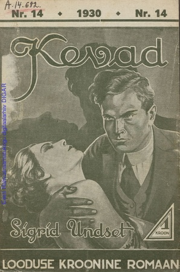
„Kevad”, 1930, Sigrid Undset, Tõlkija: Ernst Raudsepp. Allikas: DIGAR
Mahukamaid ja ambitsioonikamaid teoseid anti välja sarjas „Looduse kroonise romaani” (1929–1940). Seal ilmus muuhulgas esimene Sigrid Undseti tõlge „Kevad” Ernst Raudsepa vahenduses. Samasse suunda kuulus ka autori tuntuim teos „Kristiina Lauritsatütar”, mis ilmus hiljem sarjas „Nobeli laureaadid”.
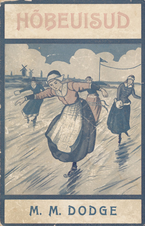
„Hõbeuisud”, 1932, Mary Mapes Dodge, Tõlkija: Auguste Pärn. Allikas: DIGAR
Noortele suunatud „Looduse kuldraamat” (1931–1939) sisaldas 91 teost, millest 77 olid tõlked, kujundades noore lugeja kirjanduslikku maitset ja lugemisharjumust.
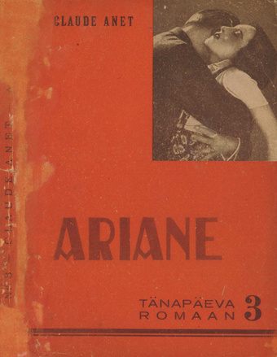
„Ariane”, 1932, Claude Anet, Tõlkija: Peeter Raag. Allikas: DIGAR
Universaalbiblioteegi järglane „Tänapäeva romaan” (1932–1936) keskendus juba selgelt žanrikirjandusele, pakkudes vaheldumisi kriminaal- ja armastusromaane, mis vastasid kasvavale massilisele lugemishuvile.
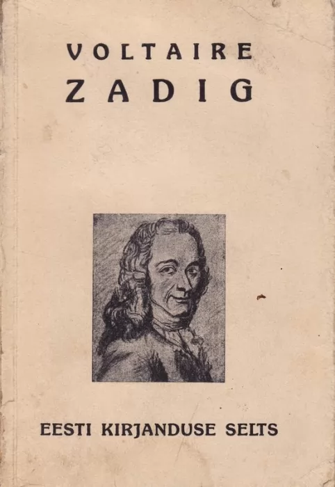
„Zadig ja teisi jutustusi", 1936, Voltaire, Tõlkija: A. Aspel. Allikas: Antiikvariaat
Eesti Kirjanduse Seltsi sari „Maailmakirjandus” (1935–1940) laiendas tõlkekirjanduse valikut, tuues eesti lugejani erinevate kultuuride ja ajastute kirjandust.

„Kuristiku serval", 1936, Dudley Hoys, Paul. Josè, Zane Grey. Allikas: DIGAR
Kirjastaja Jakob Loosalu sari „Väike raamatukogu „Uudisjutud”” (1935–1937) eristus oma järjejutulise avaldamisviisi poolest, kus lood ilmusid osade kaupa. See lõi tugeva seose ajaleheliku jutustamistraditsiooni ja raamatukirjanduse vahel.

„Põhjamaade romaane”,1936m Ilmari Kianto, Tõlkija: Eduard Virgo. Allikas: DIGAR
Eesti Kirjastuse Kooperatiivi sari „Põhjamaade romaane” (1936–1939) tõi esile põhjamaade kirjanduse, pakkudes alternatiivi saksa ja inglise kesksele tõlkekaanonile.

„Warastatud maal", 1936, Anthony Armstrong, Tõlkija: Hello Sagrits. Allikas: DIGAR
Kirjastuse Uus Eesti sari „Uus Eesti" rahvaraamatud (1936–1938) jätkas rahvaliku lugemisvara traditsiooni, pakkudes nii tõlkeid kui ka populaarseid jutustusi, mis olid suunatud laiale lugejaskonnale.

„Surm neljas astmes”, 1940, Joseph Smith Fletcher, Tõlkija: Mari Parras Allikas: DIGAR
Krimikirjandust, peamiselt inglise autoritelt, pakkus sari „Kriminaalromaan” (1937–1940), mis kujunes üheks esimeseks süsteemseks kriminaalžanri vahendajaks Eesti lugejale.

„50-sendine romaan”, 1939, Lev Tolstoi, Tõlkija: Viktor Veskimäe. Allikas: DIGAR
Kirjastuse Maret sari „50-sendine romaan” (1939–1940) keskendus eriti taskukohasele kirjandusele, muutes raamatud kättesaadavaks võimalikult laiale lugejaskonnale. Sarja eesmärk oli pakkuda odavat ja kiirelt loetavat ajaviitekirjandust.

Fjodor Dostojevski kogutud teosed (1939–1940). Allikas: OSTA
Aastatel 1939–1940 ilmus Fjodor Dostojevski kogutud teoste sari 15 köites, mis tõi eesti lugejani mh ka romaani „Kuritöö ja karistus”, mis oli varem ilmunud juba kroonise romaani sarjas.
Nõukogude Eesti
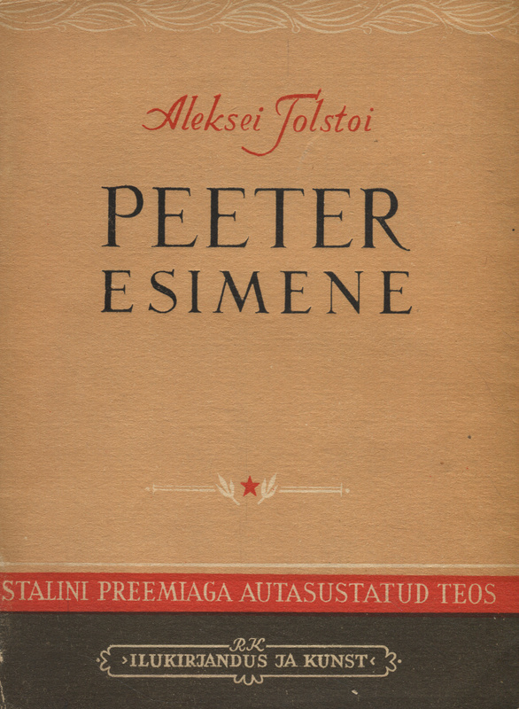
"Peeter esimene", 1949, Aleksei Tolstoi, Tõlkija: Friedebert Tuglas. Allikas: Raamatukoi
Sõjajärgses Nõukogude Eestis anti kõigepealt sarja koondatuna välja Stalini preemiaga autasustatud teoseid (1948–1955). Selle viimaste köidete ilmumise ajaks oli aga kätte jõudnud nn sulaaeg ja üle pika aja, mil meelt lahutav kirjandus oli taunitud, said taas ilmuma hakata seiklus- ja ulmejutud.

„Saladuslik saar”, 1956, Jules Verne, Tõlkija: Silvia Tui. Allikas: Raamatukoi
Seiklusjutte avaldati Eesti Riikliku Kirjastuse väga populaarses tõlkesarjas „Seiklusjutte maalt ja merelt” (1955–1962). Selle kestvast mainest annab tunnistust hilisem kordustrükk (2004–2008).

„Jane Eyre” 1958, Charlotte Brontë, Tõlkijad: Elvi Raidaru, Edla Valdna. Allikas: Raamatuvahetus
1957–1962 kirjastas Eesti Riiklik Kirjastus klassikalise kirjanduse sarja „Suuri sõnameistreid”, mis tõi lugejateni välismaiste klassikute teoseid.
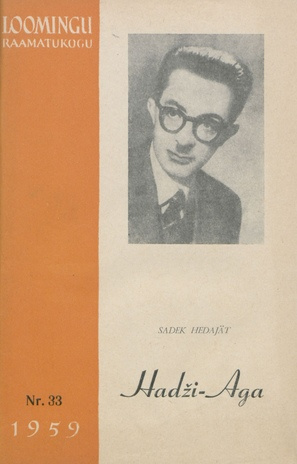
„Hadži-Aga”, 1959, Sadeq Hedayat, Tõlkija: Inna Gens. Allikas: DIGAR
Samal ajal hakkas ilmuma ka sari „Loomingu Raamatukogu”, mis keskendus kaasaegse väliskirjanduse tõlgetele ning kujunes üheks mõjukamaks kirjandusväljaandeks.
Nõukogude ideoloogilised sarjad
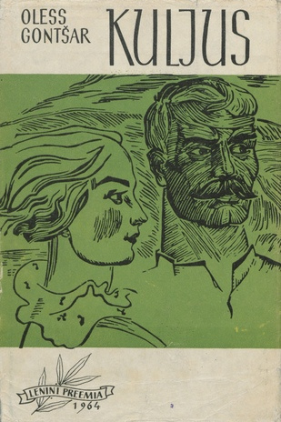
„Lenini preemia”, 1966, Oless Gontšar, Tõlkija: Madis Nurmik. Allikas: DIGAR
Nõukogude ideoloogilisemate sarjade seas oli „Lenini preemia” (1960–1967), mis tutvustas ametlikult tunnustatud autorite teoseid.

„Lendavad männid”, 1972, Justinas Marcinkevičius, Tõlkija: Mihkel Loodus. Allikas: DIGAR
„Nõukogude luule” (1971–1990) koondas nõukogude perioodi poeetikat ja ideoloogiliselt sobivaid luuletusi.

„Kuidas karastus teras”, 1984, Nikolai Ostrovski, Tõlkija: Lembit Remmelgas. Allikas: DIGAR
Noortele lugejatele suunatud sari „Mehisus” (1984–1987) keskendus seikluslikele ja kasvatava sisuga tekstidele.

„Udu hajub", 1985, Sabir Azäri, Tõlkija: Aadu Vari. Allikas: DIGAR
Sari „15” (1977–1989) koondas mitmesugust populaarset kirjandust laiale lugejaskonnale.
Tõlkekirjanduse sarjad
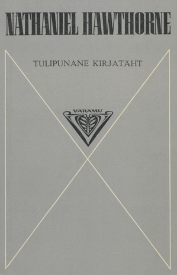
„Tulipunane kirjatäht”, 1981, Nathaniel Hawthorne, Tõlkija: Lydia Mölder. Allikas: DIGAR
„Varamu” (1972–1983) keskendus maailmakirjanduse klassikale.
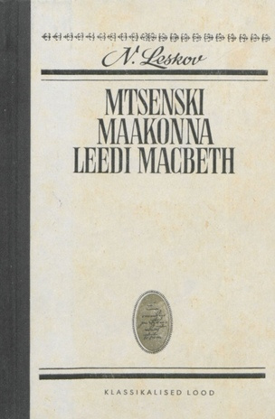
„Mtsenski maakonna leedi Macbeth”, 1981, Nikolai Leskov, Tõlkija: Friedrich Kõlli. Allikas: DIGAR
„Klassikalised lood” (1970–1992, jätkus 2000. aastast) jätkas maailmakirjanduse tutvustamist mitmes žanris.

„Kaks kolmandikku vaimu”, 1984, Helen McCloy, Tõlkija: Viktor Kerge. Allikas: DIGAR
„Mirabilia” (alates 1973) oli põnevus- ja ulmekirjanduse sari, mis tõi Nõukogude Eesti lugejateni rahvusvahelisi bestsellerid. Sarja pikk eluiga ja mahukas valik kinnitas selle populaarsust lugejate seas.
Tänapäev
1991. aastast alguse saanud tõlkesarjad peegeldasid taasiseseisvunud Eesti kirjastustegevuse uut vabadust. Väärib märkimist Lauri Leesi (snd 1945) algatatud „Europeia” (1989–2002), mis tutvustas klassikalist maailmakirjandust uute ja värskete tõlgete kaudu.
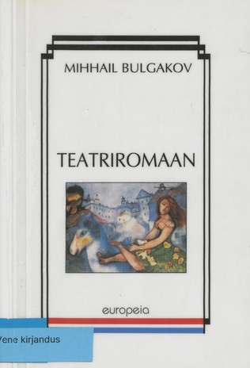
„Teatriromaan", 1997, Mihhail Bulgakov, Tõlkija: Vidrik Kivilo. Allikas: DIGAR
Väärtkirjanduse sarju hakkas ilmuma mitmetelt kirjastustelt, mis avasid uue tõlkekirjanduse laine ning laiendasid oluliselt valikut varasemate kümnenditega võrreldes.

„Esimene inimene”, 2000, Albert Camus, Tõlkija: Triinu Tamm. Allikas: Raamatukoi
Kirjastus Varrak alustas sarjaga „20. sajandi klassika” (1994), mis keskendus modernse maailmakirjanduse olulisematele teostele.
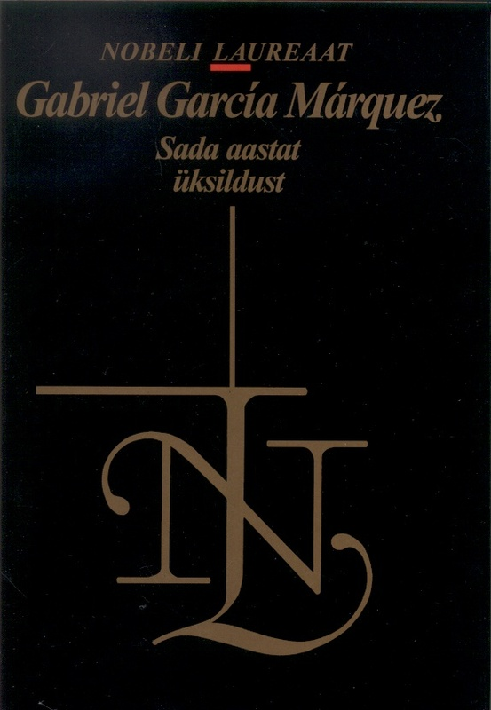
„Sada aastat üksildust”, 2002, Gabriel García Márquez, Tõlkija: Aita (Justa) Kurfeldt. Allikas: Raamatukoi
Kirjastus Eesti Raamat jätkas sarjaga „Nobeli laureaat” (1989), mis tõi eesti lugejani Nobeli preemiaga pärjatud autorite teoseid.

„Orm Punane”, 1997, Frans G. Bengtsson, Tõlkija: Anu Saluäär. Allikas: DIGAR
Sama kirjastus jätkas ka sarjaga „Põhjamaade romaan” (1997), mis tõi esile Põhjamaade kirjanduse uued ja klassikalised teosed.
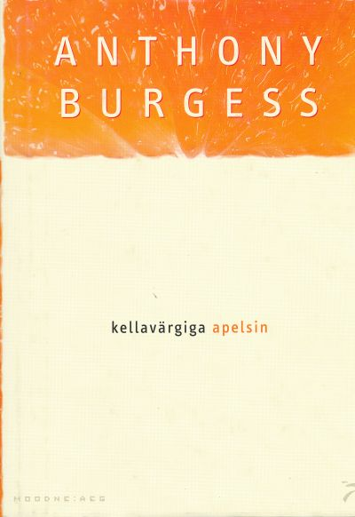
„Kellavärgiga apelsin”, 2001, Anthony Burgess, Tõlkija: Udo Uibo. Allikas: Rahva Raamat
Sarjaga „Moodne aeg” (2001) tõi Varrak lugejateni palju esmatõlkeid kaasajal tähelepanu äratanud teostest, avardades kaasaegse kirjanduse kättesaadavust. Raamatusarja "Moodne aeg" eelkäijaks oli kirjastuse Varrak aastatel 1994–2001 välja antud raamatusari "Iiris", mis 2001. aastal jagunes kaheks raamatusarjaks: "Moodne aeg" ja "20. sajandi klassika".
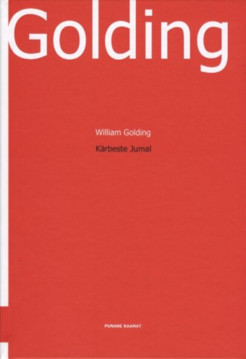
„Kärbeste Jumal”, 2003, William Golding, Tõlkija: Henno Rajandi Allikas: Raamatukoi
Kirjastuse Tänapäev sari „Punane raamat” (2000) sisaldab nii kordustrükke kui ka värskeid eestindusi.
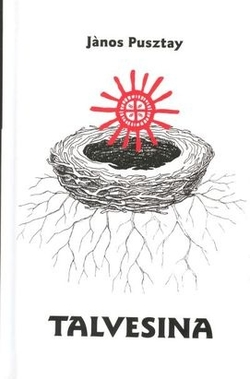
„Talvesina”, 2009, János Pusztay, Tõlkija Arvo Valton. Allikas: Raamatuvahetus
Arvo Valtoni (1935–2024) eestvedamisel ilmus soome-ugri autorite luulesari „Väikeste rahvaste suur kirjandus” (2005–2013), mis tutvustas hõimurahvaste kirjandust.
Mitmed sarjad, nagu „Mirabilia”, jätkasid nõukogude ajal populaarseks saanud põnevus- ja ulmekirjanduse suunda, pakkudes lugejatele mitmekülgset valikut. Erinevate kirjastuste krimi-, ulme- ja fantaasiakirjanduse sarju on raamatuturul rohkesti. Nende kõrvalt ei puudu ka armastusromaanide sarjad, millest mitmeid avaldab kirjastus Ersen. Kõik need sarjad täidavad olulise lünga eelnevate kümnendite kirjastustegevuses, pakkudes laiemat valikut tõlkeid erinevatest žanritest ja kultuuridest, mis varem olid kättesaamatud.